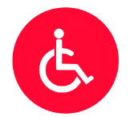
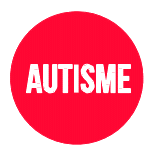

Aller directement à la partie traitant de :
HANDICAP AUDITIF
HANDICAP MOTEUR
HANDICAP VISUEL
HANDICAP PSYCHIQUE
HANDICAP INTELLECTUEL
L’AUTISME
HANDICAP AUDITIF
DE QUOI PARLE-T-ON ?
Qu’il soit de naissance, dû à une maladie ou à un accident, le handicap auditif compromet sensiblement la communication et l’accès à l’information. Il est peu visible et souvent sous-estimé. La personne sourde ou malentendante développe sa propre stratégie pour contourner son handicap et communiquer, mais elle peut aussi réagir en évitant les contacts et en s’isolant. Des moyens de communication existent, qui permettent à la personne de mieux vivre son handicap et d’échanger avec les entendants.
ACCUEILLIR ET ÉCHANGER
- Au moment de la rencontre, j’anticipe ma réaction de surprise face au son de la voix d’une personne malentendante : ses intonations sont plus profondes. J’évite les mimiques interrogatives, je reste naturel et concentré.
- Lorsque je prends la parole, j’articule distinctement sans déformer la bouche, je ne crie pas, je parle à un rythme modéré. Je dégage mon visage, j’évite de mettre la main devant ma bouche ou de baisser la tête.
- J’élabore des phrases courtes, avec du vocabulaire simple ; je reformule plutôt que de répéter une phrase non comprise.
- J’évite les endroits bruyants ; je reprends mes phrases si elles ont été couvertes par le bruit.
- J’évite de m’adresser à une personne malentendante quand elle se trouve dans une autre pièce, je me déplace pour lui parler face à face.
- Si la personne sourde est accompagnée, je m’adresse prioritairement à elle et non à son interprète en LSF2 ou LPC3.
- Dans une conversation de groupe, je fais en sorte que la personne sourde soit prévenue chaque fois que les interlocuteurs ont changé de sujet afin qu’elle se réapproprie la conversation.
- En réunion, je respecte la parole de chacun, je ne parle pas en même temps qu’une autre personne.
- Je privilégie des formats de réunions courtes – une heure – le matin de préférence et dans un endroit calme ; je veille à remettre un ordre du jour et un compte rendu pour assurer la transmission des informations.
- J’évite les échanges de blagues et de jeux de mots avec les collègues entendants devant une personne sourde, sans la convier ou lui expliquer la teneur de nos propos : elle peut s’imaginer à tort qu’elle fait l’objet de l’échange et des rires.
- Lors de passage de consignes, je privilégie l’outil informatique pour communiquer et si nécessaire j’utilise un papier et un crayon pour écrire quelques mots de résumé.
- En cas d’évacuation, je propose mon aide, je guide la personne malentendante jusqu’aux issues de secours.
HANDICAP MOTEUR
DE QUOI PARLE-T-ON ?
Le handicap moteur peut toucher un membre, une fonction motrice ou l’ensemble du corps. Les personnes atteintes de ce handicap se déplacent debout, en s’aidant d’une canne ou en fauteuil roulant. En pratique, les déficiences motrices engendrent une gêne ou un empêchement dans les déplacements, la préhension d’objets et parfois la parole. En France, on estime qu’environ 1,5 million de personnes souffrent d’un handicap moteur. Parler du handicap moteur, c’est aussi évoquer les personnes souffrant de différentes pathologies : le trauma crânien, l’épilepsie, la hernie discale, les lombalgies, l’arthrite, la polyarthrite, la sclérose en plaque, les pathologies cardiaques, l’accident vasculaire cérébral, les troubles musculosquelettiques, le bégaiement...
ACCUEILLIR ET ÉCHANGER
- Au moment de l’accueillir, je m’assure que la personne peut accéder à notre lieu de rendez- vous, je lui indique en amont les zones de stationnement aménagé, les ascenseurs... Je préviens le personnel d’accueil si besoin.
- Dans mon bureau, je veille à ce qu’aucun obstacle n’entrave son parcours.
- Lors de la rencontre, le regard est important : je ne détourne pas les yeux, je n’appuie pas mon regard, je reste naturel.
- Lorsque je la guide dans l’établissement, je marche à son rythme et je lui indique les changements de directions, je lui laisse l’usage des rampes ou des plans inclinés.
- Parfois, patienter debout à l’accueil ou devant un comptoir est très pénible : je lui propose un siège.
- Si la personne se déplace en fauteuil roulant, j’évite de m’appuyer dessus, au risque de la déstabiliser.
- Si la personne est de petite taille ou en fauteuil, je me mets à sa hauteur pour faciliter la conversation.
- Dans les espaces communs, j’évite de placer en hauteur les dossiers, les livres ou tout autre support dont elle pourrait vouloir se servir.
- Certaines personnes peuvent avoir une élocution difficile (trauma crânien ou autre atteinte cérébrale), pour autant leur intelligence n’est pas altérée : je leur parle normalement et je leur laisse le temps de répondre.
- Si la personne handicapée est accompagnée, je m’adresse à elle et à son accompagnateur, j’alterne mon attention sur les deux interlocuteurs pour favoriser l’échange.
- En cas d’évacuation, je propose mon aide notamment si la personne ne peut pas marcher.
HANDICAP VISUEL
DE QUOI PARLE-T-ON ?
Le handicap visuel recouvre des réalités variées, s’échelonnant d’un trouble visuel à une cécité complète. Actuellement, en France, 3 millions de personnes sont concernées, ce chiffre augmentant progressivement avec l’allongement de la durée de vie. Un malvoyant dans la rue ou un non voyant assis à son bureau ne se distingue pas toujours d’un voyant, alors soyons attentifs ! Une personne mal ou non voyante va appréhender son environnement grâce aux bruits de la circulation, des pas, grâce aux odeurs et aux vibrations renvoyées par les voitures ; sa concentration est intense lors de ses déplacements.
ACCUEILLIR ET ÉCHANGER
- Lors d’une rencontre, si je souhaite proposer mon aide, je dis d’abord « bonjour ». Je ne me vexe pas si la personne décline ma proposition.
- En m’approchant, j’annonce ma présence verbalement. La personne ne reconnaîtra pas toujours votre voix dès les premières secondes : je donne mon prénom ou mon nom avant d’engager la conversation.
- Pour marcher ensemble, je propose à la personne de prendre mon bras (je ne prends pas le sien). Si le trottoir est étroit ou jonché d’obstacles, je me place devant elle, sa main sur mon épaule. Il est toujours plus facile de suivre que d’être poussé !
- Si la personne tient une canne blanche, je veille à ne pas en entraver le mouvement
- J’annonce les changements de direction ou de relief, ainsi que les obstacles à éviter (zones de travaux, panneaux de circulation trop bas, déjections canines...).
- Si je renseigne sur le chemin à prendre, je précise mes informations. Exemple : « à 10 pas en ligne droite, vous tournerez à gauche ».
- Devant un escalier, je guide sa main vers la rampe et je me place à ses côtés ; je monte l’escalier à son rythme en annonçant la première et la dernière marche.
- Si elle veut s’asseoir, je guide sa main vers le dos du siège. Une fois qu’elle connaît la position du siège, la personne peut s’asseoir seule.
- Dans une réunion, je veille à ce que chacun se présente et répète son nom au moment de toute prise de parole.
- J’opte pour la rédaction de comptes rendus afin de fixer les propos d’un échange ou d’une réunion.
- Dans son bureau, je ne déplace pas les objets et je lui signale les éventuelles modifications de son espace.
- Les objets déplacés ou abandonnés dans le passage, et les portes entrouvertes représentent des dangers, je suis vigilant !
- Au quotidien, les déficients visuels n’ont pas accès aux informations écrites sur les panneaux, sur les portes ou à l’entrée d’une salle de réunion... Je n’hésite pas à les renseigner !
- En présence d’un chien guide, je considère que le chien travaille et qu’il ne doit pas être diverti, j’évite de le caresser ou de le saluer avant son maître !
- Pour aborder la personne et le chien guide, je me présente du côté opposé au chien.
- À table, je précise la localisation exacte des ustensiles et des aliments qui sont proposés.
- Inutile de bannir de votre vocabulaire les mots liés à la vision, soyez naturel ! Exemples : « J’ai très envie d’aller voir ce nouveau film » ; « J’ai vu que la machine à café a enfin été remplacée, il était temps ! »
- Je préviens la personne quand je la quitte, celui lui évitera de parler dans le vide !
- J’éteins la lumière quand je quitte la pièce !
- En cas d’évacuation, je propose mon aide.
HANDICAP PSYCHIQUE
DE QUOI PARLE-T-ON ?
Le handicap psychique se traduit par une perturbation de l’équilibre psychologique. Il n’affecte pas, en général les facultés intellectuelles mais certains symptômes peuvent limiter les capacités intellectuelles. Ce handicap se manifeste par des comportements déroutants, en décalage avec les codes relationnels habituels. Il peut intervenir à tous les âges de la vie, sans distinction de sexe ni de milieu social. Les questions de santé psychique sont encore mal connues du grand public et les préjugés négatifs ont la vie dure, avec des conséquences douloureuses pour les malades et leur entourage. Le handicap psychique est la conséquence d’une maladie psychique (hystérie, psychose, schizophrénie, dépression, bipolarité...) qui affecte la personne pour une durée indéfinie, la bienveillance est alors de mise.
- Il génère des troubles du comportement et du jugement qui entraînent des difficultés d’adaptation à la vie en société.
- Il est durable ou épisodique, léger ou intense.
- Il peut révéler des aptitudes ou comportements très appréciés professionnellement (créativité, rigueur, dynamisme...). Il est important de considérer que ce handicap non visible peut générer une grande souffrance pour la personne atteinte. Dans l’entreprise, plus que le mot qui désigne la pathologie et que seul le corps médical maîtrise, ce qui préoccupe l’entourage professionnel, c’est de conjuguer les troubles du comportement et les exigences liées au travail. Bien que les troubles psychiques ne soient pas visibles, certains comportements peuvent alerter : une réaction inadaptée au contexte, un stress important (angoisse), un raisonnement rigide, des gestes incontrôlés, une difficulté à communiquer, un repli sur soi, un état dépressif, des dérèglements alimentaires.... Dans ces situations, ne soyez pas agressif ou impatient, évitez les jugements de valeur.
HANDICAP INTELLECTUEL

DE QUOI PARLE-T-ON ?
Le handicap mental ou intellectuel peut intervenir à la naissance ou au cours de la vie, à la suite d’un accident ou d’une maladie. Ce handicap se caractérise par la lenteur des gestes ou des activités de raisonnement, un comportement peu approprié ou en décalage avec les codes sociaux pratiqués en entreprise. Le traitement des informations est lent, il est donc nécessaire d’accompagner la prise de poste en s’assurant que les consignes sont comprises. Le handicap intellectuel s’accompagne généralement de régularité et de précision dans l’exécution du travail.
ACCUEILLIR ET ÉCHANGER
- Avant de l’accueillir, je structure l’activité et les tâches qui composent son poste de travail, je communique les consignes par écrit en intégrant des codes couleurs, des schémas, des repères... La conceptualisation n’étant souvent pas possible, je reste concret.
- Je recherche parmi les collaborateurs un tuteur qui suivra l’intégration et le déroulement des tâches.
- J’explique calmement et posément les consignes, je fais des phrases courtes avec du vocabulaire simple, sans infantiliser la personne. Je la fais reformuler pour m’assurer que le message est bien passé.
- Les changements d’organisation ou les modifications de tâche doivent être anticipés pour éviter la rupture avec le rythme établi : je reste disponible durant cette période.
- Certaines règles de vie en société sont mal maîtrisées (tutoiement, geste d’affection...) : je ne juge pas mais j’indique les règles du monde du travail.
- En cas d’évacuation, je vérifie que la consigne a bien été comprise.
L’AUTISME
DE QUOI PARLE-T-ON ?
« L’autisme affecte les fonctions cérébrales. Il n’est plus considéré comme une affection psychologique ni comme une maladie psychiatrique. Définir l’autisme n’est pas chose aisée car ce trouble peut revêtir différentes formes cliniques.
Néanmoins, il est caractérisé par des altérations qualitatives des interactions sociales, des troubles de la communication et du langage, et des comportements répétitifs.
L’autisme ne peut être guéri, mais un accompagnement adéquat et un environnement adapté permettent d’améliorer nettement les relations sociales. »
Extrait du Guide Simon, Handisup Haute-Normandie (voir Ouvrages de référence).
LE SYNDROME D’ASPERGER
Le syndrome d’Asperger est une des formes d’autisme qui concerne des personnes d’intelligence normale ou supérieure, douées pour des savoirs très théoriques ou des domaines de technicité réputés difficiles.
On les appelle autistes à haut potentiel de fonctionnement (AHPF) ou Asperger... Les capacités intellectuelles des AHPF sont réelles et très recherchées dans certains milieux professionnels (informatique, qualité, sécurité, mathématique, scientifique...). Leurs capacités de traitement des informations ou d’analyse de données sont généralement très efficaces.
Les personnes Asperger éprouvent en revanche beaucoup de difficultés à comprendre et prévoir les comportements et intentions d’autres personnes, du fait de leur très faible capacité à éprouver
de l’empathie et à saisir l’implicite et l’abstrait dans les échanges. La plupart des personnes touchées ne sont pas diagnostiquées et sont souvent sans emploi, en raison de leur difficulté à interagir.
Pourtant, avec une connaissance minime du syndrome, il est possible d’employer ces personnes fiables, motivées, compétentes et souvent fortement qualifiées.
ACCUEILLIR ET ÉCHANGER
- Au moment de l’accueil, je choisis un lieu calme, sans passage. Je coupe les sonneries de téléphone ou d’ordinateur, ou toute source potentielle de distraction, et je réduis l’intensité lumineuse de l’éclairage.
- Au moment de la rencontre, j’évite (quand j’ai obtenu l’information au préalable) de tendre la main pour serrer la sienne. Les codes sociaux tels que les embrassades, poignées de main, gestes amicaux spontanés peuvent être source de stress. Je ne me vexe pas si mon interlocuteur évite mon regard.
- J’explique précisément les codes sociaux du service ou de l’entreprise. Tout ce qui me paraît évident ne le sera pas forcément pour mon interlocuteur. Exemple : on peut tutoyer les personnes de son service, mais pas les membres de la direction...
- Lors de l’aménagement du poste de travail, je propose un bureau individuel, sans éclairage direct du plafonnier. Si le bureau est situé dans un open space, j’informe que le port d’un casque antibruit est admis.
- Lorsque je sollicite l’avis d’un AHPF sur un sujet, j’accepte de recevoir ses remarques sans filtre, car il ne se souciera pas d’atténuer ses propos.
- Les personnes AHPF ne cherchent pas à mentir, tricher ou camoufler une erreur. Au sein d’un collectif de travail, leur honnêteté et leur franchise peuvent parfois être déroutante, choquante, vexante... Je comprends qu’il ne porte pas de jugement de valeur, se contentant d’énoncer les faits.
- Lors d’échanges ou de réunion, je prends en compte que les expressions du visage, mimiques, clin d’œil ou sourires ne seront pas compris. Seul le langage parlé permet de transmettre l’information.
- L’humour peut dérouter une personne Asperger. J’évite en sa présence d’employer des expressions imagées, à double sens ou au second degré. Par exemple : « Ce matin, il n’a pas les yeux en face des trous » pourra être interprété littéralement. Je parle de manière factuelle.
- Un AHPF éprouve des difficultés en réunion : il ne prend la parole que si on l’interpelle et les échanges multiples, générant une information diffuse, sont sources de stress. J’envoie un ordre du jour et un compte rendu. Si j’ai indiqué une heure de fin à la réunion, je ne suis pas surpris s’il quitte la réunion à l’heure dite, respectant la consigne initiale...
- Au quotidien, je propose au collaborateur AHPF des consignes précises, de préférence écrites. J’indique le délai d’exécution de la tâche afin de fixer une unité de temps sur le travail. Soyez certains que le délai sera respecté !
- En cas d’évacuation, je vérifie que la consigne a bien été comprise et prise en compte.